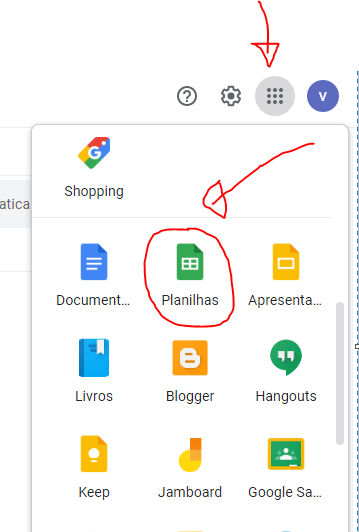
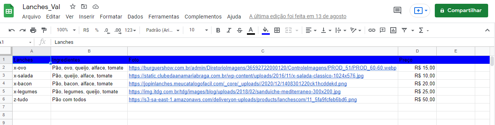
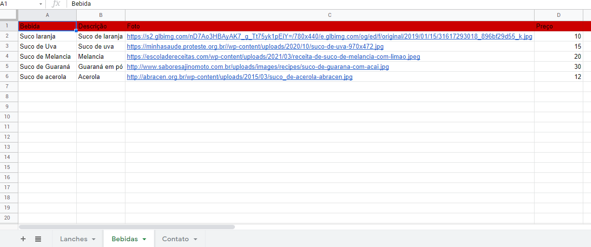
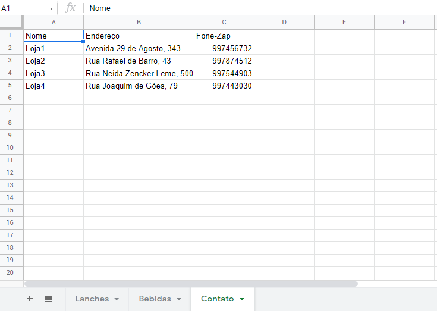

Aula 4 - Criando uma planilha no Google planilhas.
Iremos nesta aula começar nosso aplicativo e o Glide utiliza o Google Planilhas como banco de dados entre outras opções.
Vamos criar primeiro nossa planilha:

Ao abrir nossa planilha é como se estivéssemos trabalhando no Excel.
Iremos criar ela como na imagem abaixo:

Para mudar o nome clique e coloque Lanches App - eu coloquei Lanches_Val
Nas colunas coloquei os nomes dos campos que no meu caso serão: Lanches - Ingredientes - Foto - Preço
No caso as fotos peguei imagens da internet mesmo.
Preencha as células como as minhas escolhendo imagens e valores como quiser.
A planilha é salva automaticamente.
Vamos criar 3 planilhas - uma para lanches outra para bebidas e outra para contato veja as imagens abaixo:

E outra planilha para contato:

OBS: Podemos usar vários tipos de dados para se conectar ao Glide.